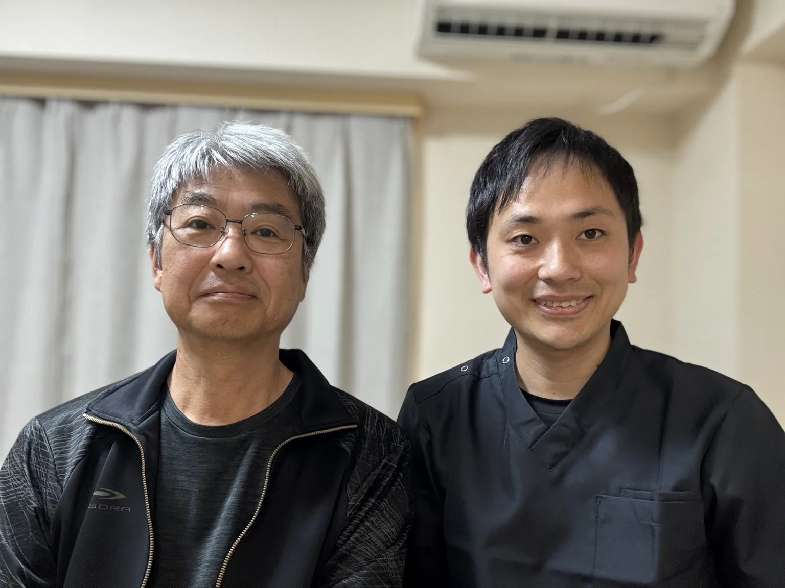
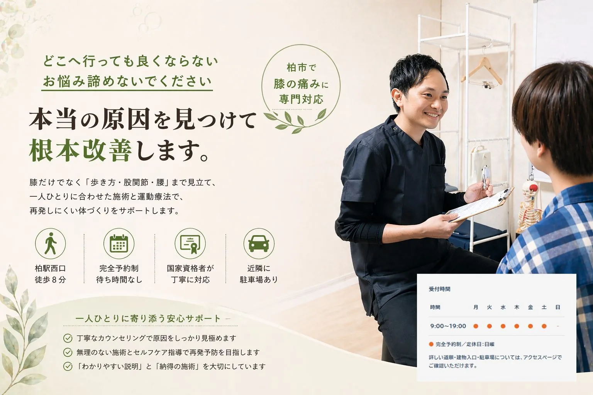
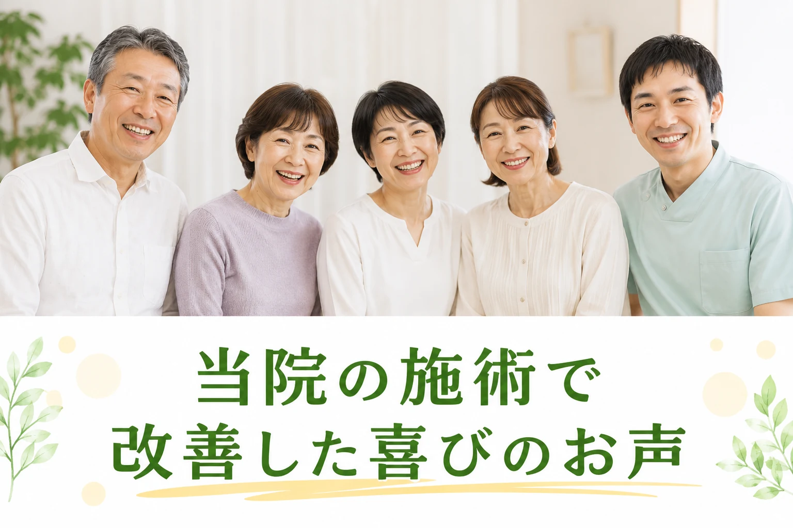
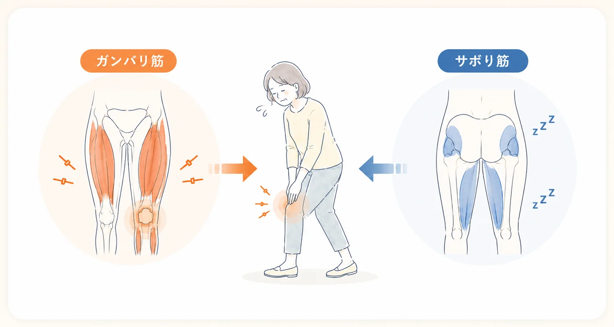
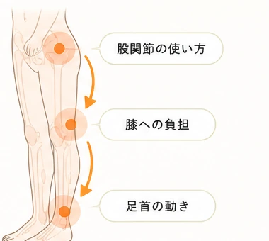
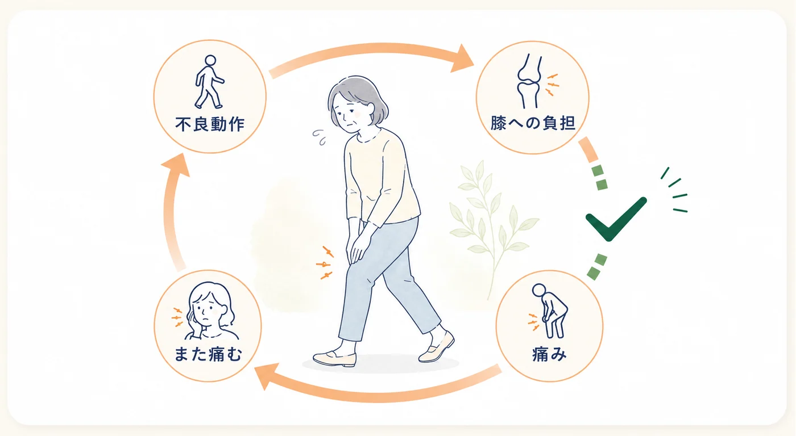
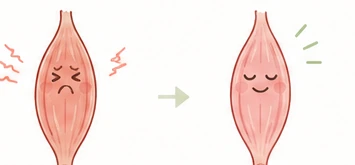
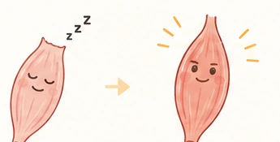
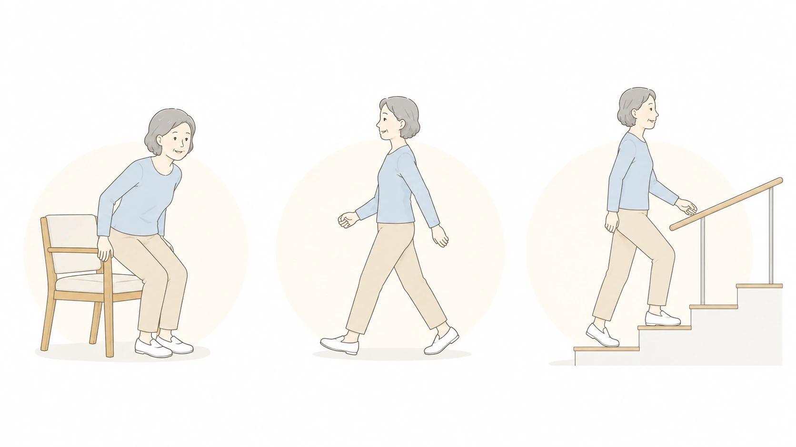
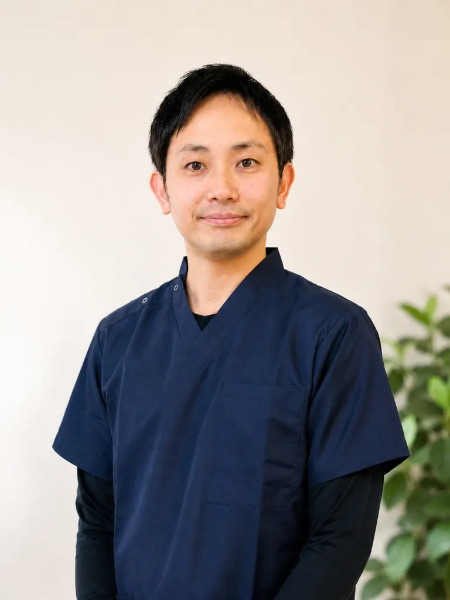

強い腰痛と長年の膝痛で来院。施術とセルフトレーニングを続けながら、歩くつらさと向き合われたお声です。
詳しく見る
それは慣れたのではなく、諦めているだけかもしれない。
もう一度、自分の体と向き合う時間をつくりませんか。

初回のご案内
初回カウンセリング＋全身整体コース
カウンセリング・状態確認込み。
まずは相談からでも大丈夫です。
アクセス
柏駅西口
徒歩8分
ご案内
完全予約制
待ち時間なし
対応者
国家資格者が
一貫対応
初回料金
カウンセリング込み
1,980円

歩き始めや立ち上がりで、膝にズキッとした痛みが出る
階段の上り下りや長時間の歩行がつらく、外出が不安になってきた
膝をかばって歩いているうちに、腰や股関節まで気になってきた
湿布や注射、マッサージを受けても、時間がたつと戻ってしまう
正座やしゃがむ動作がしづらく、日常の動きが気になる
VOICE & RESULT
当院には、膝・腰・股関節の痛みや、歩くことへの不安でお悩みの方がご相談に来られています。
同じようなお悩みで来院された方のお声をご紹介します。
大丈夫です！ご安心ください。ご相談に来られた方のお声があります。

あなたの膝が治らない、本当の理由
ヒアルロン酸注射、マッサージ……何度やっても痛みが戻る。 原因は膝ではなく、「膝を支える仕組みの崩れ」にあります。
MSMメソッドが解き明かす「痛みの根本原因」
こんなお悩み、ありませんか
マッサージの直後はラクになるのに、翌日にはまた痛くなる…
注射を打っても、結局また同じ繰り返し…
→ その繰り返しには、明確な理由があります。
なぜ治らないのか
多くの治療では「痛い場所を緩める」ことしかしていません。しかし痛みが出ている場所は「被害者」に過ぎません。 真犯人は、まったく別の場所に潜んでいます。
理由 01
硬くなった筋肉をほぐすだけでは応急処置に過ぎません。痛みが出ている筋肉は、他をかばって「頑張りすぎている」だけ。
本当に必要なのは、長年サボって眠ってしまった「不労筋」を目覚めさせることです。筋力が足りないまま揉みほぐしても、歩けば即座に膝はグラつき、痛みは戻ります。
MSMメソッドは「緩める」と「鍛える」を同時に解消し、痛みが戻りにくい体を目指します。

理由 02
膝は上下の関節（足首・股関節）の不具合を、まるまる押し付けられています。
足首のロック（距骨のゆがみ）：地面の衝撃を吸収できず、歩くたびに膝がねじれる動きを強いられます。
股関節のサボり（大腰筋の影響）：骨盤がゆがみ、膝が外側にねじれた状態になります。
「膝だけ」を見ていては、このねじれの連鎖は止められません。

理由 03
筋肉や関節を整えても、日常の動作パターンそのものが変わらなければ、また同じ場所に負担がかかり続けます。長年かけて染みついた「膝に悪い動き方」は、本人も気づかないうちに繰り返されています。
痛みが繰り返されるサイクル
→ このサイクルを断たない限り、痛みは戻り続けます
MSMメソッドでは、体の構造を整えるだけでなく、「なぜその動きをしてしまうのか」という脳・神経レベルの誤作動にもアプローチします。
運動療法
膝に負担をかけない歩き方・立ち方を、繰り返しの実践で体に定着させます。
認知行動療法的アプローチ
無意識に繰り返している不良動作を自覚し、脳からの動作指令を正しく書き換えます。
この2つを組み合わせるのが
MSMメソッド独自の視点

MSMメソッド 3ステップ
その場しのぎの施術ではなく、「原因を断つ」3つのステップで根本からアプローチします。
STEP 01
STEP 01 — Mobility（緩める）
膝に負担をかけている足首・股関節を、独自のテンプレートに基づき解放します。「痛い場所」ではなく「原因の場所」に正確にアプローチ。

STEP 02
STEP 02 — Stability（鍛える）
眠ってしまった「サボり筋」をピンポイントで刺激。関節が正しい位置で安定しやすくなるように、膝を支える力を取り戻していきます。

STEP 03
STEP 03 — Movement（使える）
正しく動くようになった体で、膝に負担をかけない歩き方・動作を習得。「また痛くなるかも」という不安のない毎日を実現します。

繰り返しに、終止符を
そんな繰り返しに終止符を打ちたい方は、ぜひ当院のMSMメソッドを体感してください。
無料相談・ご予約はこちら


選び方の目安
役割はそれぞれ異なります。検査や診断が必要な場合は医療機関を優先し、そのうえで日常動作の負担を整理したい方を当院がサポートします。
| 比較項目 | 整形外科 | 一般的な整体 | 整体院ひざこぞう |
|---|---|---|---|
| 得意なこと | 画像検査、診断、薬や注射など医療的な判断。 | 筋肉のこわばりを和らげる施術やリラクゼーション。 | 膝・股関節・足首・歩き方を合わせて確認し、日常動作の負担を整理。 |
| 説明の内容 | 病名や検査結果を中心に説明されることが多い。 | 施術内容の説明が中心になりやすい。 | なぜ膝に負担が集まるのか、生活動作と合わせて分かる言葉で説明。 |
| 進め方 | 痛み止め、湿布、注射、リハビリなどを状態に応じて選択。 | 痛い場所への手技が中心になりやすい。 | 緩める・鍛える・動作改善の順で、無理なく歩く動きにつなげる。 |
| 向いている方 | 強い腫れ、熱感、外傷、手術の相談など医師の判断が必要な方。 | 一時的な疲れやこりを短時間で軽くしたい方。 | 階段・歩き始め・立ち上がりの膝痛を、体の使い方から見直したい方。 |
画像検査、診断、薬や注射など医療的な判断。
筋肉のこわばりを和らげる施術やリラクゼーション。
膝・股関節・足首・歩き方を合わせて確認し、日常動作の負担を整理。
病名や検査結果を中心に説明されることが多い。
施術内容の説明が中心になりやすい。
なぜ膝に負担が集まるのか、生活動作と合わせて分かる言葉で説明。
痛み止め、湿布、注射、リハビリなどを状態に応じて選択。
痛い場所への手技が中心になりやすい。
緩める・鍛える・動作改善の順で、無理なく歩く動きにつなげる。
強い腫れ、熱感、外傷、手術の相談など医師の判断が必要な方。
一時的な疲れやこりを短時間で軽くしたい方。
階段・歩き始め・立ち上がりの膝痛を、体の使い方から見直したい方。
初回の進め方
初回は、いきなり施術を進めるのではなく、状態の整理と説明を先に行います。不安を整理してから進めたい方に向けたご案内です。
お悩みと
生活動作の確認
いつから、どこが、どんな時につらいのかを丁寧にお伺いします。

姿勢・歩き方・
関節の動きの確認
お体の状態を検査し、原因を見つけていきます。

施術方針の説明
検査結果をもとに、わかりやすく今後の方針や見通しをご説明します。

不安や疑問を一つずつ解消しながら、安心して通える環境を大切にしています。
説明なしに
強い施術をしない
お体の状態を確認し、同意を得てから施術を行います。

無理な運動を
押しつけない
お一人おひとりの状態に合わせて、できることからご提案します。

その場で長期契約を
迫らない
必要な方に必要なご提案をします。ご納得いただいてからご検討ください。

気になることがあれば、どんなことでもお気軽にご相談ください。
院長プロフィール

整体院ひざこぞう 院長
かわかみ たくや
変形性膝関節症・坐骨神経痛・脊柱管狭窄症・椎間板ヘルニアなど、慢性的な痛みを抱える方々と毎日向き合っています。外傷から慢性痛まで幅広く診てきた経験が、私の強みです。
経歴・資格
私が痛みの専門家を目指したわけ
サッカーに打ち込んでいた学生時代、オーバーユースによる膝の痛みでまともに歩けない時期がありました。その経験が、膝の痛みで苦しむ方の気持ちに寄り添える原点になっています。院名「ひざこぞう」にも、この思いが込められています。
20歳のとき、クローン病を発症し入退院を繰り返しました。その経験から「健康であることの大切さ」を人一倍深く理解しています。現在は食事や生活習慣に気をつけながら元気に施術を続けており、患者さんの日常生活改善にも積極的に向き合っています。
院長のこと、もう少し
施術への想い
「先生に出会えて良かった。」
「もっと早く来ていれば良かった」と
多くの方から感謝の声を頂いています。まずは一度試してください。
私があなたの膝痛を全力で改善させます！
近日中まで
6名様限定割引
残り2名様
【受付時間】9:00〜19:00 【定休日】日曜
施術中は電話に出られないことがあります。後ほど折り返しお電話いたします。
膝の痛みや不安を抱えている方へ。
まずは今の状態を一緒に確認していきましょう。
予約前に特に多い不安だけを、短くまとめました。
| 時間 | 月 | 火 | 水 | 木 | 金 | 土 | 日 |
|---|---|---|---|---|---|---|---|
| 9:00〜19:00 | ● | ● | ● | ● | ● | ● | - |
完全予約制／定休日：日曜
詳しい道順・建物入口・駐車場については、アクセスページでご確認いただけます。
最後に、ご相談はこちらから
メールフォームからお名前・お悩み・ご希望日時をお送りください。確認後、折り返しご連絡いたします。
送信が完了しました。
アクセスを確認する